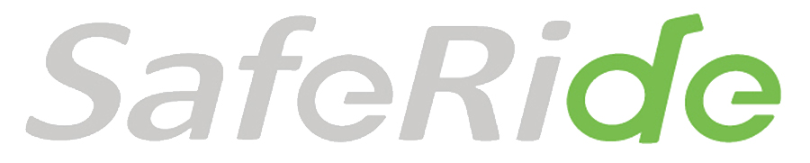

SafeRide安騎誕生原由
近年來全球吹起休閒環保風，節能減碳蔚為風潮，騎乘自行車成為時下最夯的活動，自行車所產生的便利性與機動性，一直是其他的交通工具所無法取代的。如今自行車已成為「活力」、「健康」、「樂活」、「環保」與「時尚」的代表。
經調查民眾騎乘自行車主要活動型態為休閒、運動、通勤，而騎乘自行車民眾最為重視的是行車安全，肉包鐵的自行車在交通事故中容易造成重大傷害，因此單車騎乘安全配備逐漸受到重視，為此我們希望能提供民眾在騎乘自行車時能有高品質的安全配備。
我們最大的希望是如同我們的品牌” Safe Ride”所要傳達的初衷-”安全騎乘”作為出發點，做出可以輔助自行車族群在任何騎乘狀態下得到最大的保護，在每次完成騎乘後能夠平安快樂的回家。